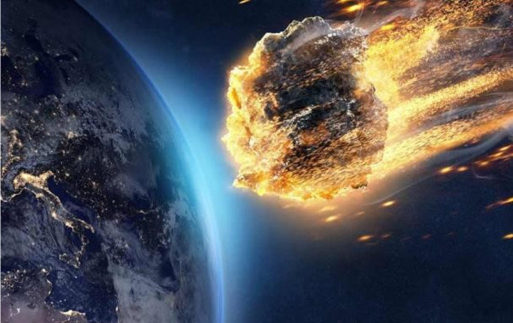
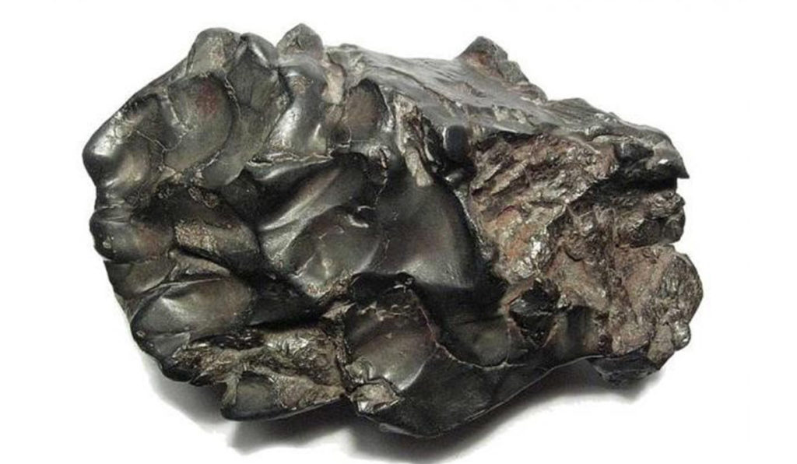
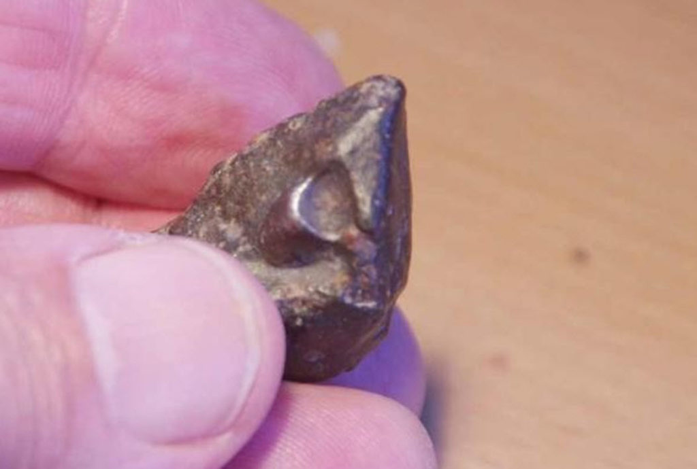
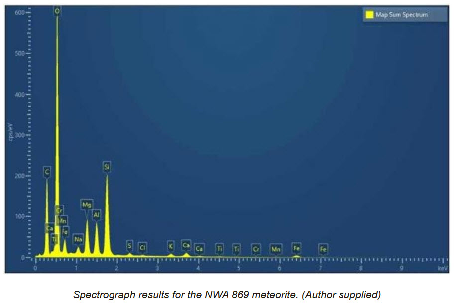
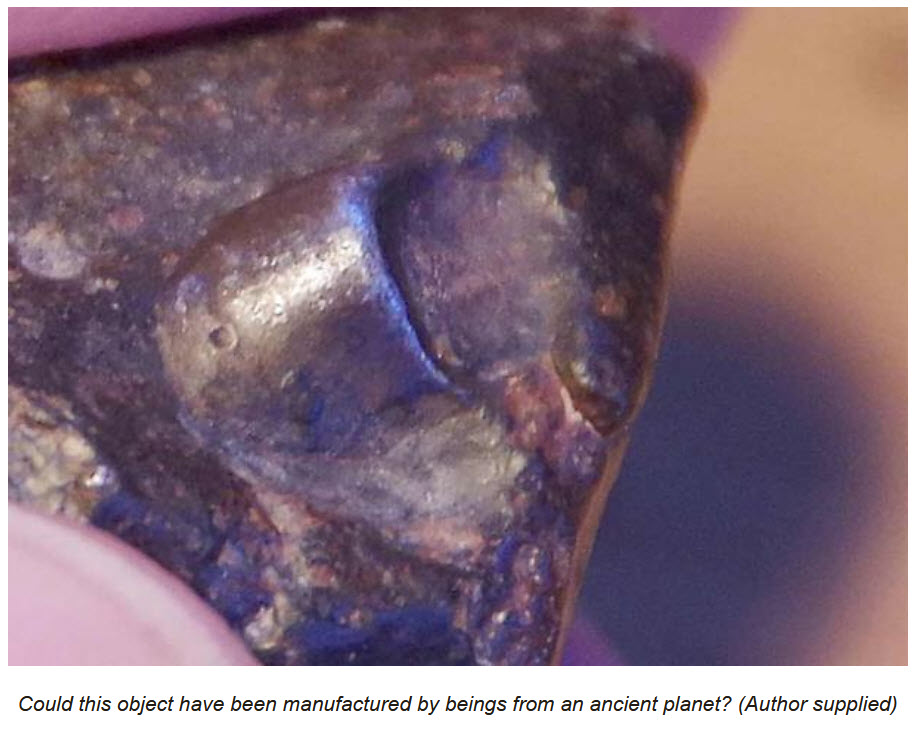
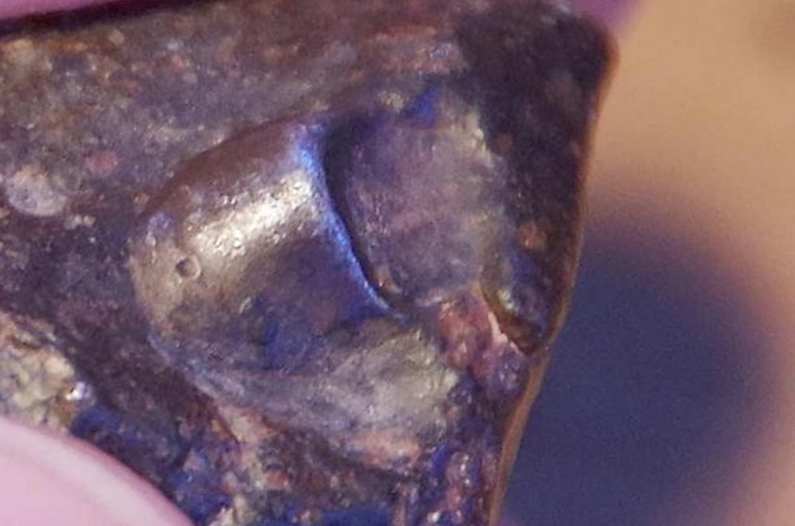

Ai! We talk about thousands of year old anomalous objects, and MM introduces millions of years old objects. But what of billions of years old objects? What the fuck is going on?
Well, just today I have a “new” entry in the world of “what the fuck”. And you know these things come and go, and eventually completely disappear. But in reality just realize that our universe is completely populated with intelligence, and we are just infants in the grand scheme of things.
So whoa!
Anomalous Metallic Object Discovered Inside a 4.5 Billion-Year-Old Meteorite
This is a complete reprint from HERE. The usual disclaimers apply. You all know the drill.
As meteorite dealers, my wife Linda and I have continued supplying meteorites and importing new stock throughout lockdown. On Friday, April 17th 2020, I received a parcel of meteorites I had ordered from a dependable regular source. These were twenty examples of a very well-known and popular common chondrite known as NWA 869. One of them was different and appeared to contain a metallic object inside.
For over twenty years we have been the owners of the UK’s only full-time meteorite dealership, Spacerocks UK. We both have university qualifications in astronomy and have lectured widely at many of the country’s most auspicious institutions. At any one moment we have several thousand meteorites of all types in our inventory. We are therefore completely familiar with their appearance.
The origin of meteorites
At this point, it’s worth giving a brief explanation about what meteorites are and where they come from. The solar system (the Sun, planets, asteroids and comets) condensed from a cloud of dust and gas known as the solar nebula around five billion years ago. The first solid objects were millimetric spheres called chondrules. These joined together over a few million years to form increasingly large chunks. Eventually, by collision, these accreted to form planetissimals and finally, around 4.5 billion years ago, the eight large planets and other, smaller bodies that make up the solar system.

The vast gaps between the orbits of the eight major planets are full of debris left over from these early days. Additionally, a region between Mars and Jupiter holds many thousands of smaller planetary objects known as asteroids. These occasionally collide (more so in the past), launching further rocky and metallic debris into the solar system .
If one of these fragments collides with the Earth on its passage around the Sun, it will heat up to over 6,000 degrees Celsius because of friction with the atmosphere. This is the cause of the familiar shooting stars, or meteors, we may see at night. If a chunk is large enough, it may survive and reach the surface of the Earth. This residual object is known as a meteorite.
Explaining the types of meteorites
There are, broadly speaking, three types of meteorite:
- Chondrites: fragments of the original ancient stones that remain from the beginnings of the solar system. These often contain chondrules, the small spheres mentioned earlier. Chondrites are all around 5 billion years old.
- Achondrites: stony material blasted off the surface of a planet, asteroid or satellite by the impact of another object. Achondrite meteorites have been proven to have originated on many bodies, including Mars, the Moon and asteroids such as Vesta,
- Irons and stony irons are fragments of the cores of fully-formed small planets that were disrupted during collisions billions of years As the first planets grew in size, heavy elements such as nickel and iron sank to their centers to form metallic cores, like that of the Earth.
Generally speaking, meteorites are named after the place where they fell or were found. That’s why the iron meteorite that made the Arizona Meteor Crater is called Canyon Diablo and that which exploded over Russia in 1947 is known as Sikhote-Alin.

The NWA 869 meteorite in question
The meteorite we are discussing here, NWA 869, comes from a large strewn field which was the 869 th such to be discovered in North West Africa: hence its name. Why 869 is so prized by collectors is that most of meteorites from this field are small, complete examples, rather than fragments of larger bodies that exploded as they passed through the atmosphere (see photos).
The majority have an attractive blue-grey fusion crust (melted surfaced) and their shape reflects their attitude as they streaked downwards. This is known as ‘orientation’: a bit like the way spacecraft enter the atmosphere heat- shield first. OK, that’s the technical stuff out of the way!

When I was processing the parcel of newly-arrived 869s, I suddenly noticed a metallic glint from one of them. This isn’t unusual: all chondrites contain nickel-iron and some (see photo) display quite obvious metallic flecks. This was different. In this case, the shiny region could be seen to be a small cylindrical feature around 6 mm (0.2 in) in diameter.
This metallic area was protruding at an angle from a region of glassy fusion crust, which, in places, could be seen to flow away from the object. Another interesting feature is that the cylinder had a small impact crater on its surface, something not uncommonly seen on iron meteorites or, indeed, spacecraft on their return from orbit.
The meteorite and its strange inclusion have been examined both microscopically and spectroscopically by a contact at the University of East Anglia. The preliminary results indicate that the silver cylinder is not composed of any of the usual accessory minerals found in meteorites. Further examination is scheduled.

I have no doubt at all that the object embedded in the NWA 869 meteorite was in place as the stone entered the Earth’s atmosphere some time in the past. Since the meteorite itself was formed several hundred millions of years before the planets, it begs the questions: who made it, and where did it originate before becoming part of the solar nebula? A very real possibility might be that the cylinder originated on a planet orbiting a Population 2 star that exploded as a nova several billion years before our solar system formed.

What does all this mean?
The oldest stars in the universe are, counterintuitively, called Population 3 stars. The “nuclear furnaces” at the heart of these were the origin of some of the elements “heavier” than hydrogen. As these ancient stars ran out of hydrogen, the larger ones would have shrunk, then exploded, releasing gas, dust and some of these heavier elements into the universe. It was this material that condensed to form Population 2 stars ten to fifteen billion years ago. The larger examples of these also underwent cataclysmic supernovae, generating regions of star formation where Population 1 stars like our Sun – and their associated planets – condensed.

The oldest stars in the universe are, counterintuitively, called Population 3 stars. The “nuclear furnaces” at the heart of these were the origin of some of the elements “heavier” than hydrogen. As these ancient stars ran out of hydrogen, the larger ones would have shrunk, then exploded, releasing gas, dust and some of these heavier elements into the universe. It was this material that condensed to form Population 2 stars ten to fifteen billion years.
It is now known that planets are very common. So far astronomers have discovered over 4,000! It is probably the case that most Pop 1 stars have planetary systems. Since the oldest of these stars were formed ten billion years ago – twice as long ago as the Sun – it would seem highly likely that life and ultimately civilizations evolved upon those in suitable locations.
Any that ended their lives as supernovae will have scattered all kinds of stellar, planetary and – possibly – archaeological debris into its galaxy. Either we are alone – unique – in the cosmos, or life occurs wherever there is the slightest possibility of it: in which case, we should expect to find alien artifacts within ancient meteorites.
You can find out more about the world of Meteoritics in David’s book, Spacerocks, available from Amazon.
Conclusion
Amazing stuff.
Most of the stuff that I, MM have dealt with is millions of years old. Not billions. So this is a great find. I really only know about the stuff prior to the formation of the solar system though the chatter of my pilot. And at that its all really limited. I never felt the need to inquire further. Maybe I should have. Never the less it’s interesting stuff. That is for certain.
It might be nice for someone in the UK to visit this person and have a first hand look at the object… of course, once the coronavirus restrictions are lifted.
A billions of year old object is most certainly something worth checking out. Don’t you agree? I mean it’s not everyday that you come across an object that is fabricated by intelligence that predates the solar system.
And finally, I want to provide a RUFUS video.
Remember all this insight in to how our universe really is, is really interesting. But seriously, it is how we live our lives that really matters.
If you have a dear friend on his deathbed, maybe it is the most Rufus thing to do is to defy the rules and conventions and instead to spend time with him in his last moments. Be the Rufus. Anything else is below you. Here’s my video HERE. 13MB.
You know who you are. (wink.)